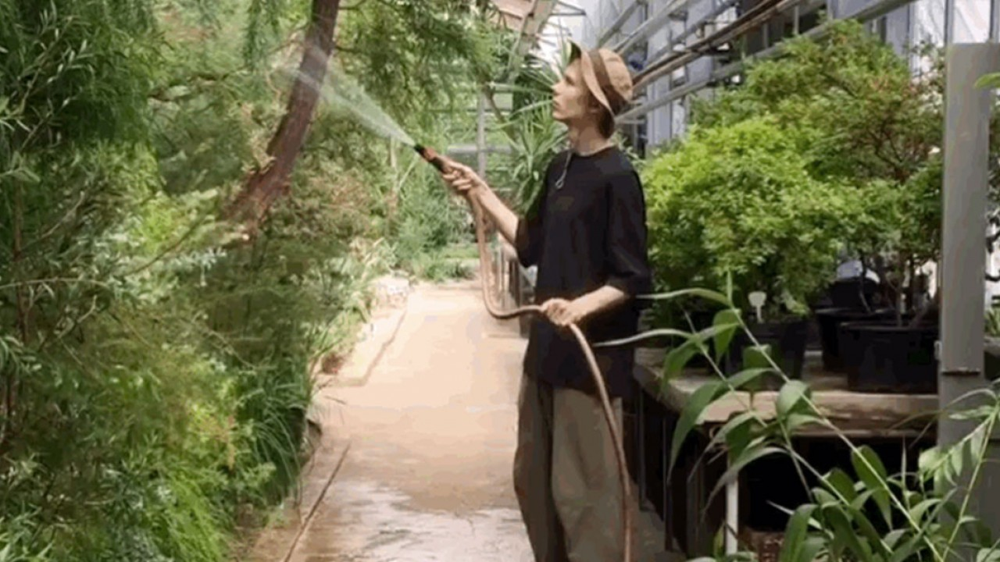
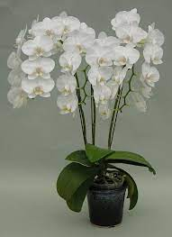

Orchids are easily distinguished from other plants, as they share some very evident derived characteristics or synapomorphies. Among these are: bilateral symmetry of the flower (zygomorphism), many resupinate flowers, a nearly always highly modified petal (labellum), fused stamens and carpels, and extremely small seeds.